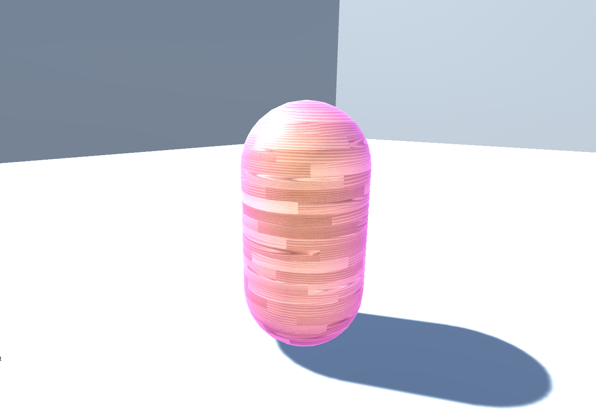
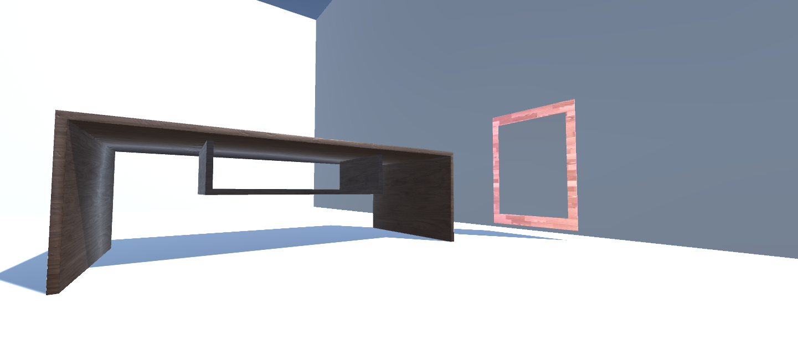
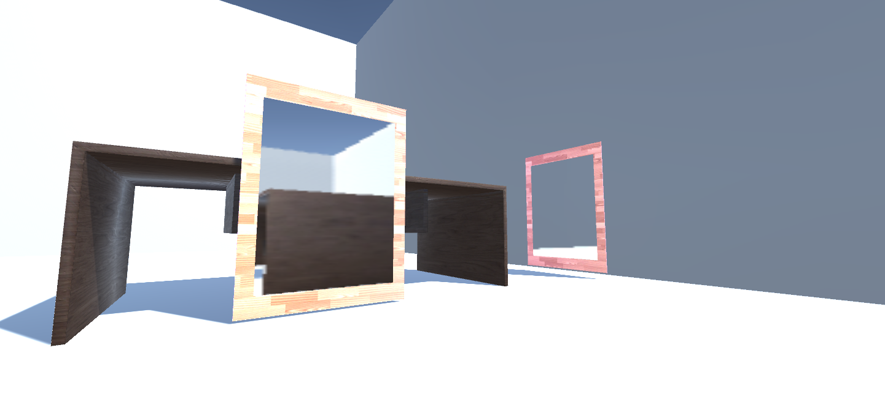

Team members
|
Table of Contents |
Our team has accomplished the MVP of the project. This includes being able to place two portals down, look through the portals so the player can see what the other portal sees, and having emission shader's that give life to the scene. The portal placement is calculated by shooting a ray from where the player clicks. We check for collisions from the ray to a plane. If the ray collides with a plane object, then we place a portal down on the plane with a slight offset, so that the portal does not get buried in the plane.
For being able to see through the portals, we employ a couple of camera tricks. We have two cameras set up, one for each portal. Each of these cameras relays what they are viewing to its partner portal. We must update both camera's position in relation to the player's position. This works by flipping the portal camera's and positioning the camera to the inverse of the player's current position. We must then rotate the camera afterwards. This allows us to maintain a nice view in each portal that does not look disjointed.
For the shaders, we apply what we learned in project 4 to create a blinn-phong unlit shader. We have also created a surface shader that wraps objects in light. We first calculate a Fresnel coefficient by taking the dot product of the view direction and the world position of the object's vertex. We then raise it to some power. We linearly interpolate the texture and emission color using this coefficient and set our object's emission equal to that. This works well for spherical/cylindrical objects with smooth, round edges, but not as well for shapes such as planes or cubes.
Our progress has been pretty good so far. We finished the mvp, like how we intended. Currently, for our portal view, it only displays a real time camera feed, but does not really take into account lighting. Our portals also clip through parts of the floor or other portals, so we must fix that by offsetting if it detects such collisions. Another thing the portal currently doesn't do is teleporting the player, which is one of the next main goals. While our shader emanates or allows for certain objects to radiate/emit light, it only works for spheres or cylinders.
|

|

|

|
As we are able to get an example scene and basic portal representation to be created,
we are able to complete our Minimal Viable Product (MVP) as planned.
We then move on to complete more complex features and stretch goals. They are listed as follows: